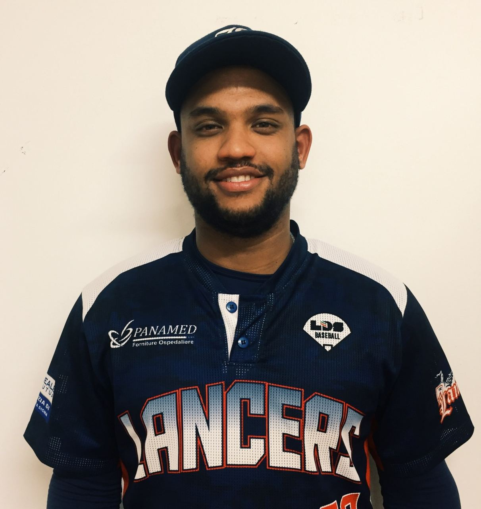
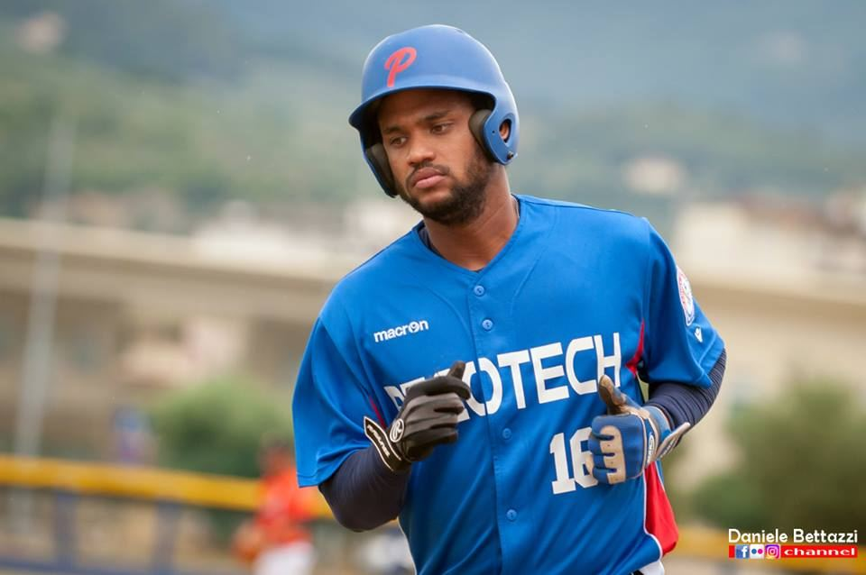

La società Lancers Baseball Lastra a Signa è lieta di ufficializzare l’arrivo dell’atleta Marcos Diaz che andrà a rafforzare il parco degli interni ed il lineup della Serie B 2019.
Marcos è nato a Cuba, più precisamente a L’Avana capitale dell’isola caraibica, dove ha iniziato a giocare a baseball dall’età di 7 anni; a 13 anni la sua prima esperienza in Italia, durante il periodo di permanenza è sceso in campo con la maglia del Lucca.
Interno giovane, classe 1996, può ricoprire tutti i ruoli del diamante con efficacia, è dotato di forza e velocità che gli permettono di poter spaziare in vari spot del lineup.
A distanza di cinque anni dalla sua prima volta, Diaz, torna definitivamente sulla penisola italiana e nel 2016 conquista la promozione in Serie B con la squadra lucchese; l’anno seguente, nella categoria superiore, Marcos chiuderà la stagione con ottimi numeri; nello specifico media battuta di .364, 32 valide colpite e ben 22 basi rubate.
Statistiche che gli varranno le attenzioni della Serie A1 lo scorso anno a Sesto Fiorentino, stagione 2018, dove Diaz a causa di un infortunio non trova la continuità necessaria che un impegno simile comporta ma chiude comunque l’esordio in massima serie con .146 di media battuta ed un eccellente media difensiva di .957 con soli due errori commessi.

Da subito Marcos ha mostrato entusiasmo per il progetto che la società Lancers BC, nella figura del DS Ciappi, gli ha presentato e per questo ha deciso di vestire la casacca bianco/blu con grande entusiasmo e con l’obiettivo di “dare il massimo per gli allenatori ed i compagni“, le prime parole dello stesso giocatore cubano che si è già unito al gruppo.
È doveroso ringraziare la società Lucca Baseball & Softball per la collaborazione nel passaggio del giocatore per la stagione 2019.
In arrivo altre notizie sul mercato e non solo, il mondo Lancers è sempre ricco di novità.